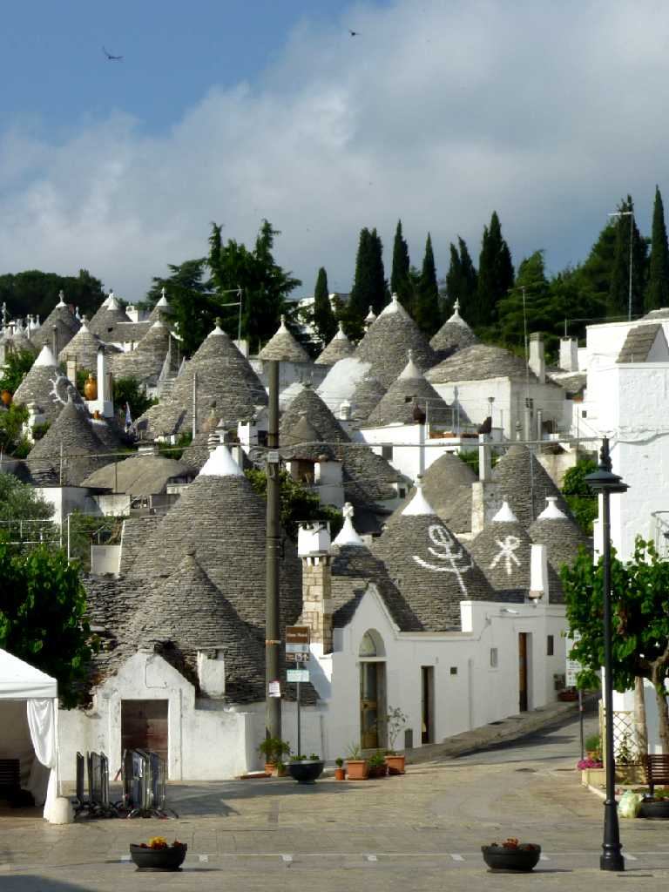
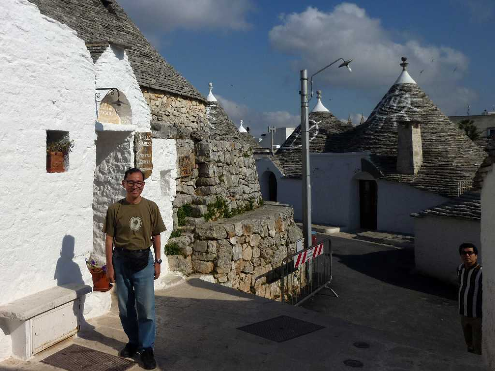
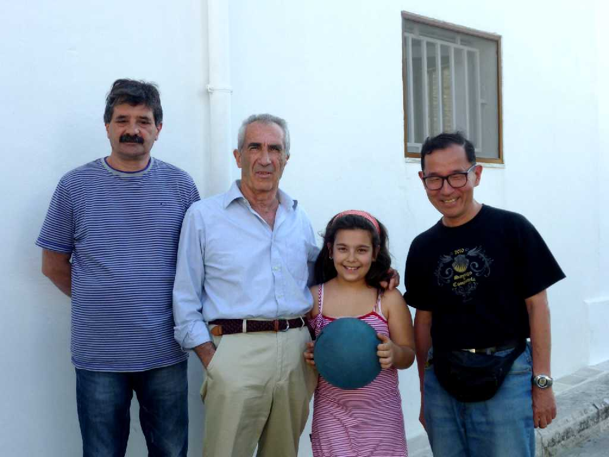

Trullo Alberobello
美しい樹を意味するアルベロベッロは１６世紀にトゥルッロが４０軒程創られ農地開墾のため１００年かけて１,０００軒程の街を形成した

June 20 2011 Trulli Alberobello
トゥルッロ(Trullo)は部屋一つに屋根一つを意味し集合して建てられた複数形をトゥルリ(Trulli)と云う

June 19 2011 Alberobello
街道でポール遊びをしていたトゥルリの住民